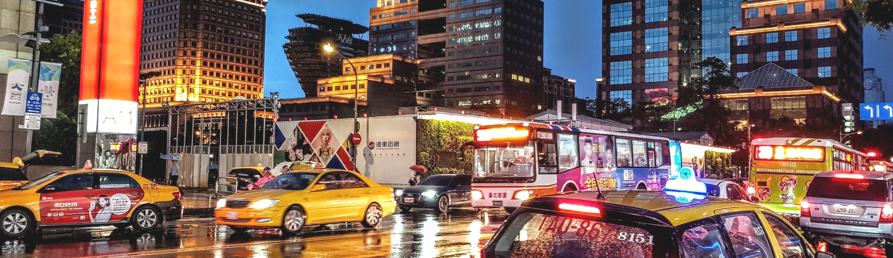
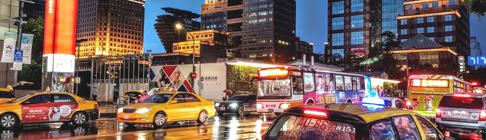

Top＞Travel＞台北
Home＞Travel＞台北
九份


細い路地の階段に沿って建つ古い館に、
提灯が
灯るノスタルジックな風景。1989
年、映画「非
情城市」の舞台になったこ
とをきっかけに再び
注目を集めると共
に、日本では、九份の町中に
ある建物が
2001年公開の映画「千と千尋の神隠
し」
に登場する湯婆婆の湯屋を彷彿させると
し
て話題に。日本統治時代に建てられた
古い建物
が残ることから、どこか懐かし
い雰囲気が漂う
町並みは日本人の琴線に
触れ、今や台湾で行き
たい観光地ナン
バーワンとなりました。
-


-

-
おすすめ観光時間は幻想的な夕暮れがねらい目
15:00～19:00 -

-


-
おすすめ観光時間は展望台営業時間帯
11:00～19:00
台北101


高さは509.2m、地下5階+地上101階からなり、
名前
の由来にもなっている。エレベーターは
東
芝エレベータ製で、毎分1,010メートル
（時速
60.6キロメートル）の速さで上昇
でき、地上1
階から展望台のある89階（地
上382.2メート
ル）まで39秒で到達する。
展望台、オフィス、
レストラン、ショッ
ピングモールなどが入る台
湾を代表する
ランドマークワー。有名なカウン
トダウ
ンパーティーをはじめ節目に合わせたラ
イトアップを行っています。
台北観光の夜の目玉と言えば、なんと
言っても
夜市（ナイトマーケット）があ
げられます。
毎日市内の各所でひらか
れ、夕方から夜遅くま
で多くの人々で賑
わっています。 絶品Ｂ級グ
ルメ・小吃か
らファッション、ゲームといった
お店が
集まっています。


寧夏夜市

寧夏路夜市は台湾伝統の屋台料理やB級グルメがメイン
の夜市です。特に大同区の圓環付近には懐かしいグルメ
がたくさん集まっていますので、思う存分味わってくだ
さい。また、ここの夜市は歩道と車道が分かれているの
で、食事やショッピングに便利です。食の夜市とも言わ
れる寧夏路夜市には毎日、大勢の人々が訪れています。
営業時間
日曜日17:00 - 25:00
月曜日17:00 - 25:00
火曜日17:00 - 25:00
水曜日17:00 - 25:00
木曜日17:00 - 25:00
金曜日17:00 - 25:00
土曜日17:00 - 25:00
饒河街観光夜市
饒河街観光夜市は、屋台料理から雑貨や生活用品も扱う
夜市です。その手ごろな値段が魅力的で、多くの人々で
賑わいます。最も観光客に人気があるのは「藥燉排骨」
「胡椒餅」「水煎包」「蚵仔麵線」など行列ができる人
気料理と、「麻辣臭豆腐」「牛肉麵」「天婦羅」など台
湾の伝統的な屋台料理も定番です。
営業時間
日曜日17:00 - 23:00
月曜日17:00 - 23:00
火曜日17:00 - 23:00
水曜日17:00 - 23:00
木曜日17:00 - 23:00
金曜日17:00 - 23:00
土曜日17:00 - 23:00
士林夜市

ここは市内で最も規模が大きく知名度の高い夜市で、台
湾のおいしい屋台グルメからユニークな雑貨まで、あり
とあらゆるものが売られています。その種類の豊富さ、
敷地の広さ、歴史、そして夜遊びスポットとしての人気
度と、士林夜市の魅力は何から何まで台北ナンバーワ
ン。台北観光では絶対にはずせない魅惑スポットです。
営業時間
日曜日16:00 - 00:00
月曜日16:00 - 00:00
火曜日16:00 - 00:00
水曜日16:00 - 00:00
木曜日16:00 - 00:00
金曜日16:00 - 00:00
土曜日16:00 - 00:00
通化夜市

台北の他の夜市と比べると小規模ではあるものの、食べ
物においてはどの夜市にも決して劣りません。有名な駱
記小炒(炒め物)、裕品元の氷火湯円、平価鉄板焼、通化
夜市の揚げサツマイモボールは、ぜひとも賞味したい特
色的な伝統軽食です。マッサージ店もたくさんあり、1
日の終わりに最適な夜市です。
営業時間
日曜日17:00 - 24:00
月曜日17:00 - 24:00
火曜日17:00 - 24:00
水曜日17:00 - 24:00
木曜日17:00 - 24:00
金曜日17:00 - 24:00
土曜日17:00 - 24:00
各地へのアクセスにご利用ください
 

- ■MRT 地下鉄：初乗り20元
-
乗り方は日本の地下鉄とほぼ同じ。
改札
を通る時には、切符・ICカード
共にタッ
チ。台北MRTは全て各駅停
車です 。
- ■バス：初乗り15元
-
バス停は、ポールが立っているだ
け、大
通りでは車道の真ん中のバス
レーン沿い
にあります。乗りたい場
合、バスに向
かって手を挙げます。
乗車して、現金で
払う場合は運転手
に行先を告げて運賃箱
にお金を入れ
ます。
- ■タクシー：初乗り70元
-
市内の移動で気軽に使うことが出来
ま
す。MRTなどが運行しない真夜中
や早朝
の移動にも便利です。新幹線
の駅や有名
観光地などにはタクシー
乗り場が準備さ
れているので、そこ
から乗りましょう。
ホテルならフロ
ントで呼んでもらいま
す。
- ■EASYCARD 悠遊カード：販売額100元
-
現金をチャージして使うことが出来
る交
通系ICカード。台北旅行の際に
手に入れ
ておくと便利です。MRT・
バス・台湾鉄
路などで使用すること
ができ、切符を買
う手間がなく、運
賃が割引（MRTは二割
引き）になり
ます。